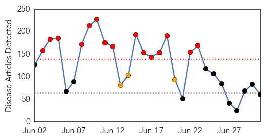
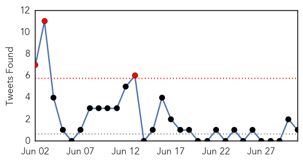
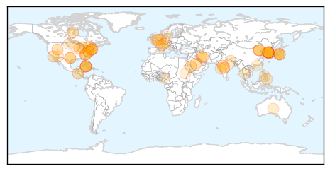
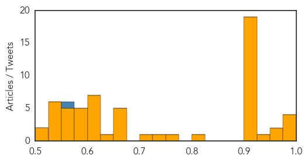

West Nile Virus
30-Day Web Trend
1 alerts, 0 warnings

30-Day Twitter Trend
0 alerts, 0 warnings

Article Locations

Article Confidences
Top Articles:
- 0.997
- Arboviral Disease in New Hampshire
- 0.996
- Village of Lemont Spraying for Mosquitos Thursday
- 0.964
- NYC detects West Nile virus in Queens and Staten Island mosquitoes
- 0.853
- First West Nile Mosquitoes Found This Year in New Dorp Beach and Queens
- 0.752
- News, Weather and Sports for Lincoln, NE; KLKNTV.com
- 0.539
- West Nile Mosquitoes Found in New York and Texas
- 0.534
- West Nile Virus Confirmed in Webster County, Officials Say Likely Statewide
Top Tweets:
-
No tweets found for Jul 01, 2015
Unknown
30-Day Web Trend
15 alerts, 3 warnings

30-Day Twitter Trend
3 alerts, 0 warnings

Article Locations
Article Confidences
Top Articles:
- 0.998
- No new cases of MERS for four days – The Korea Times
- 0.996
- (LEAD) S. Korea reports no additional cases of MERS for fourth straight day
- 0.981
- The Chosun Ilbo (English Edition): Daily News from Korea
- 0.977
- North Carolina: Tarheel Q and Cowfish case count updates
- 0.969
- No MERS cases reported for four straight days
- 0.964
- Scientists identify first-ever likely treatments for deadly ‘MERS’
- 0.927
- Only one MERS case in six days
- 0.922
- With monsoon comes 30% rise in cases of diarrhoea in Indore
- 0.917
- Chicago Tribune
- 0.917
- Chicago Tribune
- 0.917
- Chicago Tribune
- 0.917
- Chicago Tribune
- 0.917
- Chicago Tribune
- 0.917
- Chicago Tribune
- 0.917
- Chicago Tribune
- 0.917
- Chicago Tribune
- 0.917
- Chicago Tribune
- 0.917
- Chicago Tribune
- 0.917
- Chicago Tribune
- 0.917
- Chicago Tribune
- 0.917
- Chicago Tribune
- 0.917
- Chicago Tribune
- 0.917
- Chicago Tribune
- 0.917
- Chicago Tribune
- 0.915
- Protect yourself and your family from Lyme disease
- 0.913
- Two rabid bats found in Weber County
- 0.818
- Two TB cases confirmed among food services workers at fairgrounds in San Diego
- 0.773
- Nuevo Laredo officials conduct scabies precaution
- 0.731
- Norovirus Outbreak Forces Holland America Ship Back To Port Early
- 0.715
- Legionnaires disease scare at Galveston prison hospital
- 0.674
- Hotel Shilla CEO courts Chinese tourists
- 0.672
- HIV cases set new record high in May
- 0.672
- BMJ Blogs: The BMJ Blog Archive Rethinking human resources for health in post-earthquake Nepal
- 0.657
- South Korea waives visa fees to attract tourists amid Mers
- 0.655
- Addressing Inadequate Number Of Doctors In Nigeria
- 0.631
- Cuba Becomes the First Nation to Eliminate Mother-To-Child Transmission of HIV
- 0.625
- Maricopa: Residents say water caused illnesses
- 0.624
- UNICEF says one in three without toilets; children exposed to death, diseases
- 0.620
- UNCOVERING LYME DISEASE: THE GOVERNMENT’S RESPONSE
- 0.617
- Bangkok Post
- 0.615
- UNICEF, WHO: Lack of Sanitation for 2.4 Billion People Undermining Health Improvements
- 0.612
- De-addiction centres in India not equipped with proper facilities
- 0.603
- Marken ships trial supplies directly to patients in Korea as MERS tapers off
- 0.594
- Medical Doctor Explains The Healthy Effects of a Positive Outlook in New Book
- 0.591
- Cuba first nation to eliminate mother-to-child HIV and syphilis
- 0.588
- Burst water main could see supplies cut off on hottest day of the year
- 0.585
- SKorea lifts tourism restrictions to beat MERS crunch
- 0.576
- Joint WHO/UNICEF Progress Report on Sanitation and Drinking Water: 2015 update and MDG assessment
- 0.568
- Mom Looks To Recovery After Flesh-Eating Bacteria Takes Hand, Both Feet
- 0.568
- The Caledonian-Record
Showing top 50 articles...
Top Tweets:
- 0.557
- China & US will work 2gether to support in building the African Centers for Disease Control and Prevention (African CDC)